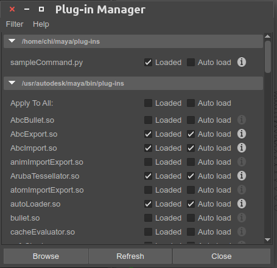

前言
其實官方Maya Help文件寫的蠻清楚了，建議強者可以直接參考文件，不過這個系列比較像是我自己學習的心得，方便讓自己消化，也讓剛接觸的人可以無痛上手（當初發現中文資料超少的QQ）。
開發一律使用Python API 2.0
Run Maya’s Script Editor的快速鍵
ctrl+A 全選指令 , 按下數字鍵那邊的Enter
First Command Plug-in
在maya的mel command輸入: getenv MAYA_PLUG_IN_PATH 並執行
就可以看到現在MAYA_PLUG_IN_PATH有包含哪些路徑
代表我們所開發的plugin只要再這些目錄其中一個都可以！
|
|
我個人是選擇/home/chi/maya/plug-ins這個資料夾來進行開發，如果該目錄下沒有plug-ins資料夾就自己建立一個吧！
專案流程
Source Code
接下來在該資料夾下新增一個檔案
sampleCommand.py
|
|
詳情請看程式說明
Run Maya’s Script Editor
在maya的python command輸入:
|
|
就會把sampleCommand.py載入到maya Plugin中
要確認是不是真的載入，可以到Maya的 Windows > Settings/Preferences > Plug-in Manager

可以看到sampleCommand.py已經載入成功！
程式說明
Plug-in initialization
首先看下面的Plug-in initialization部份
這邊有3個function
- maya_useNewAPI
- initializePlugin
- uninitializePlugin
initializePlugin、uninitializePlugin
Maya plug-ins官方規定，在我們的python檔案中因為要讓Maya知道如何load/unload，所以必須要有initializePlugin()及uninitializePlugin()兩個functions
裏面實作用的是OpenMaya.MFnPlugin的registerCommand()還有deregisterCommand()。
maya_useNewAPI
而maya_useNewAPI()的話是Python API 2.0所要定義的東西，負責告訴Maya什麼樣的type objects會被傳過去
If these two functions do not exist in the file, the plug-in will fail to load.
Note that in the Python API 1.0, the pointer must be cast to a valid Maya object using OpenMayaMPx.asMPxPtr(). This is not required in the Python API 2.0. However, a maya_useNewAPI() function must be defined to indicate what type objects are being passed.
Plug-in
接下來往上看Plug-in的部份
|
|
這裡定義了一個我們自己的class，可以指定想要做的事情。
kPluginCmdName、cmdCreator
在這個例子中，由於我們的class繼承於OpenMaya.MPxCommand
所以我們必須要利用MFnPlugin.registerCommand()來進行register
而MFnPlugin.registerCommand()需要設定兩個參數
Command Name
我們把kPluginCmdName設定成想要的名稱，在這裡我們把他叫作myCommandName，等一下在MEL command呼叫的時候，就是呼叫這個名稱。Command Creation Function Reference
cmdCreator function負責建立並回傳我們class的實體
__init__、doIt
眼尖的各位一定發現了，那我們class裏面還有兩個function是什麼呢？
__init__
這個function就是Constructor（建構子），不過這個Constructor必須使用他的base class constructor來建構。
簡單來說因為我們的class繼承於OpenMaya.MPxCommand，所以要使用OpenMaya.MPxCommand他的建構子，並把自己作為參數丟過去。This is the command’s constructor. Its body must invoke the constructor of the base class from which it is derived.
doIt
這邊就可以定義想做的事情拉~
原本的範例就只有一個pass，所以也沒有做事情。
可以試著把pass拿掉，然後塞想要跑的指令玩玩看。
不只doIt()，class裏面還可以設定undoIt()還有redoIt()來用呢，這部份就之後介紹拉
參考
- Maya Sample Command Plug-in
http://help.autodesk.com/view/MAYAUL/2017/CHS/?guid=__files_GUID_85B1116E_F0C1_42AD_9CD4_30E936B6C7B8_htm